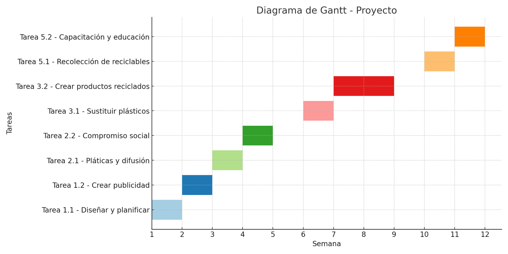

María Fernanda Sandoval Ortega | Grupo M23C1G46-014
Fases del Proyecto
El proyecto está diseñado para disminuir el uso de plásticos y fomentar hábitos sostenibles. Se organiza en tres fases principales:
Fase Inicial: Se planifican las acciones, se diseña publicidad ecológica y se lanza la campaña en redes sociales.
Fase de Desarrollo: Sustitución de plásticos por productos biodegradables y fabricación de artículos reciclados.
Fase de Concreción: Recolección de residuos reciclables, formación ambiental y cierre de actividades.

Escenarios del Proyecto
Para anticiparse a los posibles resultados, se plantean dos escenarios:
Mejor Escenario: Gran participación ciudadana, motivación alta y replicación del proyecto en otras zonas. Acciones: difusión continua, reconocimientos, comités locales.
Peor Escenario: Bajo interés comunitario, poca asistencia y dificultades logísticas. Acciones: rediseño de estrategias de comunicación, alianzas con ONGs y centros educativos.
Estándares de Medición
Se aplican indicadores para evaluar el éxito del proyecto:
Cantidad de personas involucradas en talleres y campañas.
Disminución efectiva del uso de plásticos convencionales.
Volumen de residuos recolectados y reciclados.
Seguimiento puntual del cronograma de actividades.
Alianzas con instituciones educativas y sociales.
Recursos y Control
El proyecto requiere recursos estratégicamente distribuidos por fase:
Materiales: Folletos, pancartas, bolsas ecológicas, material didáctico.
Tecnológicos: Proyectores, redes sociales, software de registro.
Financieros: Fondos públicos, apoyos institucionales, incentivos y ahorros personales.